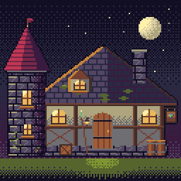
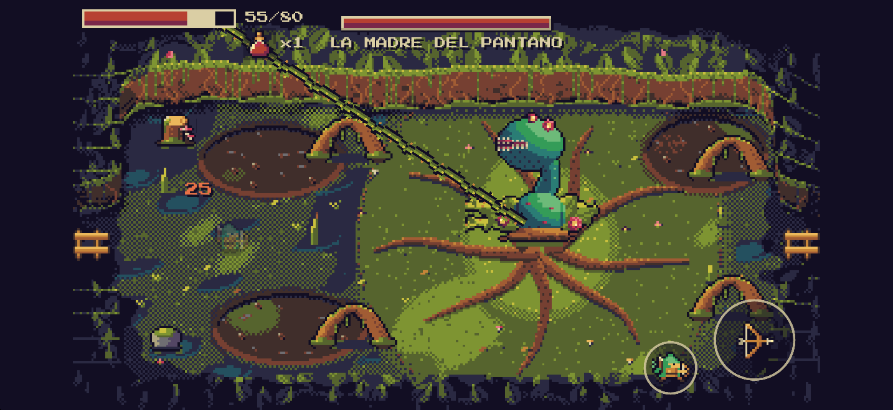
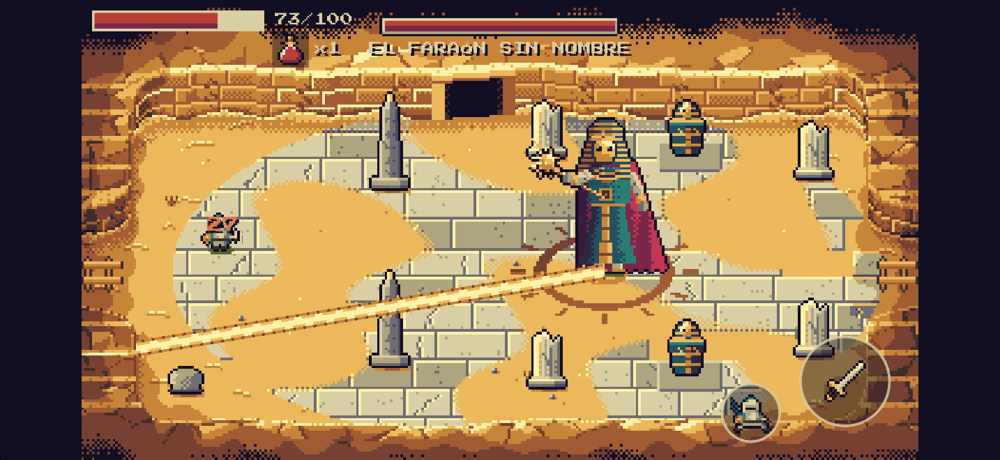
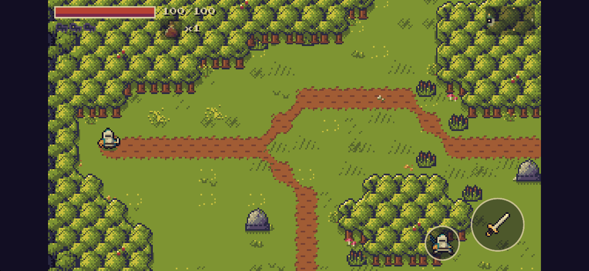
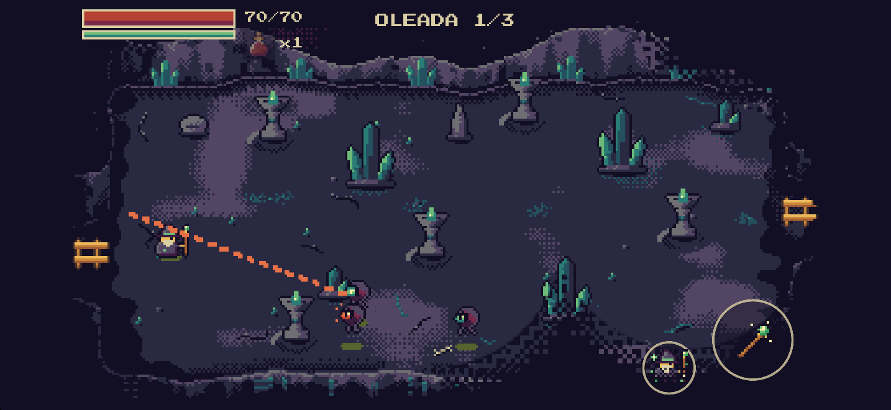
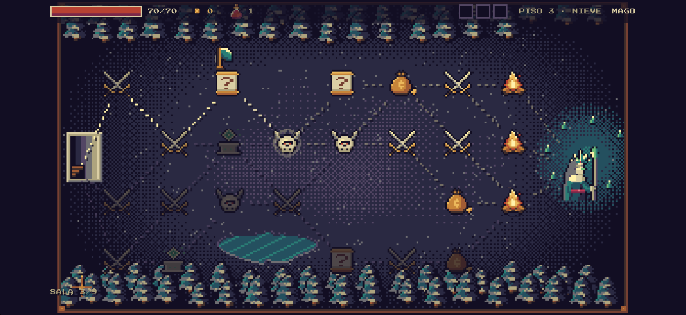

Roguelite de acción en pixel art para iPhone
Pixel art action roguelite for iPhone
Roguelite de ação em pixel art para iPhone





Elige tu clase y baja por seis pisos generados al azar hasta el fondo del Abismo. Cada piso es un mapa de combates, élites, eventos, mercaderes y fogatas, y termina con un jefe. Al vencerlo eliges: bajar o retirarte con lo ganado.
Bosque, Mazmorra, Nieve, Desierto, Pantano y Abismo, cada uno con sus enemigos, trampas y música.
Guerrero, Arquera y Mago, con seis habilidades cada uno, reliquias, amuletos y paletas de color.
El Bosque y la Mazmorra son gratis. El juego completo se desbloquea con una sola compra. Sin anuncios.
Pick your class and descend six randomly generated floors to the bottom of the Abyss. Each floor is a map of fights, elites, events, merchants and campfires, ending with a boss. Beat it and choose: go deeper or retire with what you earned.
Forest, Dungeon, Snow, Desert, Swamp and Abyss, each with its own enemies, hazards and music.
Warrior, Archer and Mage, with six skills each, relics, amulets and color palettes.
The Forest and the Dungeon are free. Unlock the full game with a single purchase. No ads.
Escolha sua classe e desça seis andares gerados ao acaso até o fundo do Abismo. Cada andar é um mapa de combates, elites, eventos, mercadores e fogueiras, e termina com um chefe. Ao vencê-lo, você escolhe: descer ou se retirar com o que ganhou.
Floresta, Masmorra, Neve, Deserto, Pântano e Abismo, cada um com seus inimigos, armadilhas e música.
Guerreiro, Arqueira e Mago, com seis habilidades cada, relíquias, amuletos e paletas de cores.
A Floresta e a Masmorra são grátis. Desbloqueie o jogo completo com uma única compra. Sem anúncios.